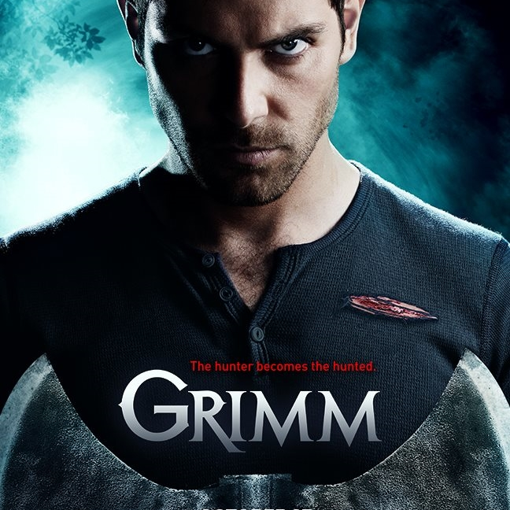

S É R I E S - M A N I A
|  | GÊNERO | Ficção/Fantasia |
|---|---|---|
| STATUS | Renovada | |
| ESTRÉIA | BRA 28/11/2011 | |
| EUA 28/10/2011 |
Grimm conta a história de Nick Burkhardt, um detetive de homicídios que tem sua vida transformada ao descobrir que é descendente de uma sociedade secreta, conhecida como Grimm. Sua missão, assim como a de seus antepassados, é manter o equilíbrio entre a vida real e a mitologia. Essa ligação com o mundo das fábulas oferece alguns perigos ao detetive e seus entes mais próximos, em especial sua noiva Juliette Silverton e seu parceiro de trabalho Hank Griffin. Porém, quanto mais Burkhardt tenta se afastar, mais se aproxima de suas raízes e inimigos do passado.
Com a ajuda de Monroe, um Blutbad renovado e seu confidente, ele terá de lutar contra estranhas criaturas, conhecidas como Wesen, que o perseguem e fazem mal às pessoas do mundo real. Depois de alguns episódios, além de Monroe, Nick também conta com a ajuda deRosalee, uma Fuchsbau especialista em elementos do mundo Wesen.